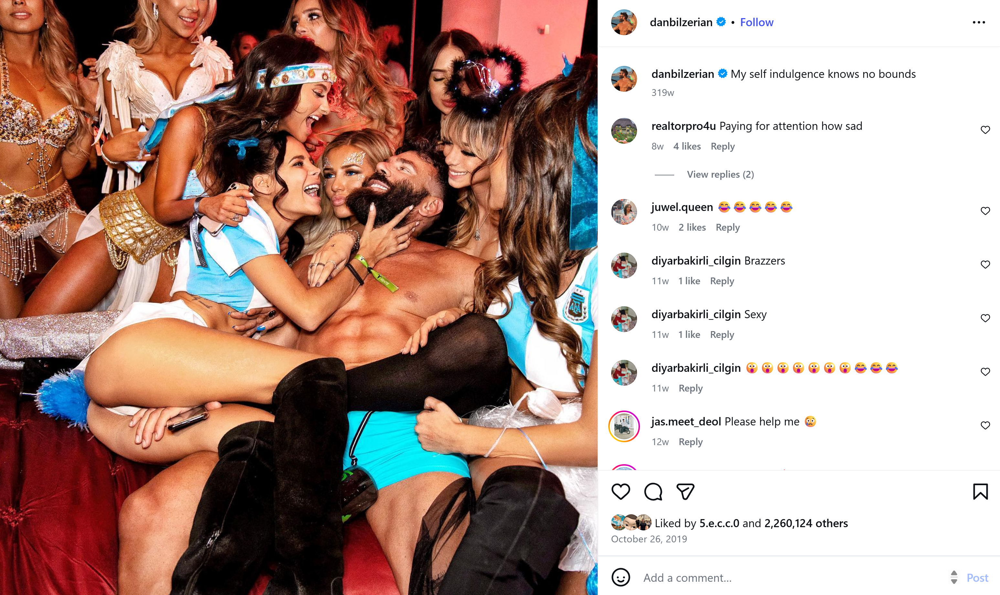
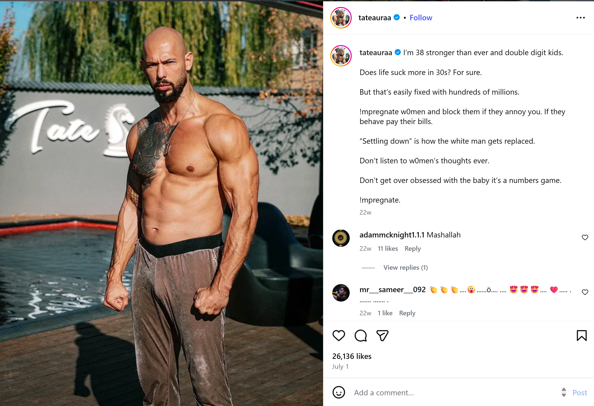
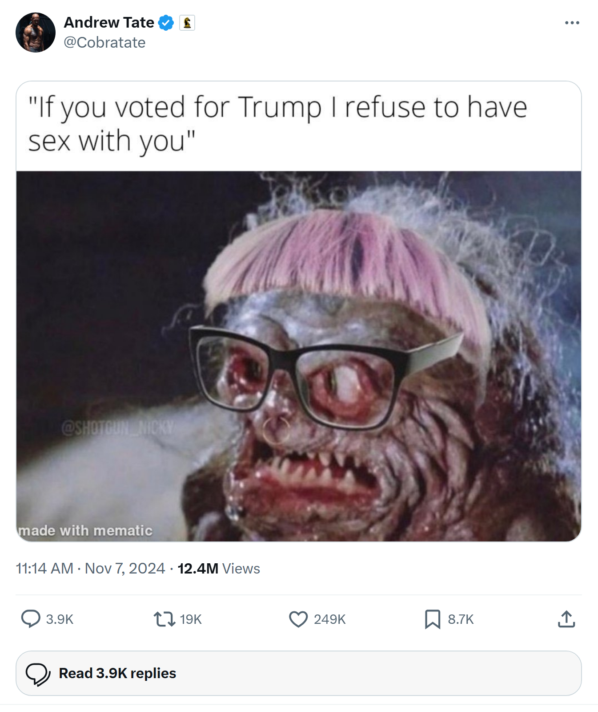
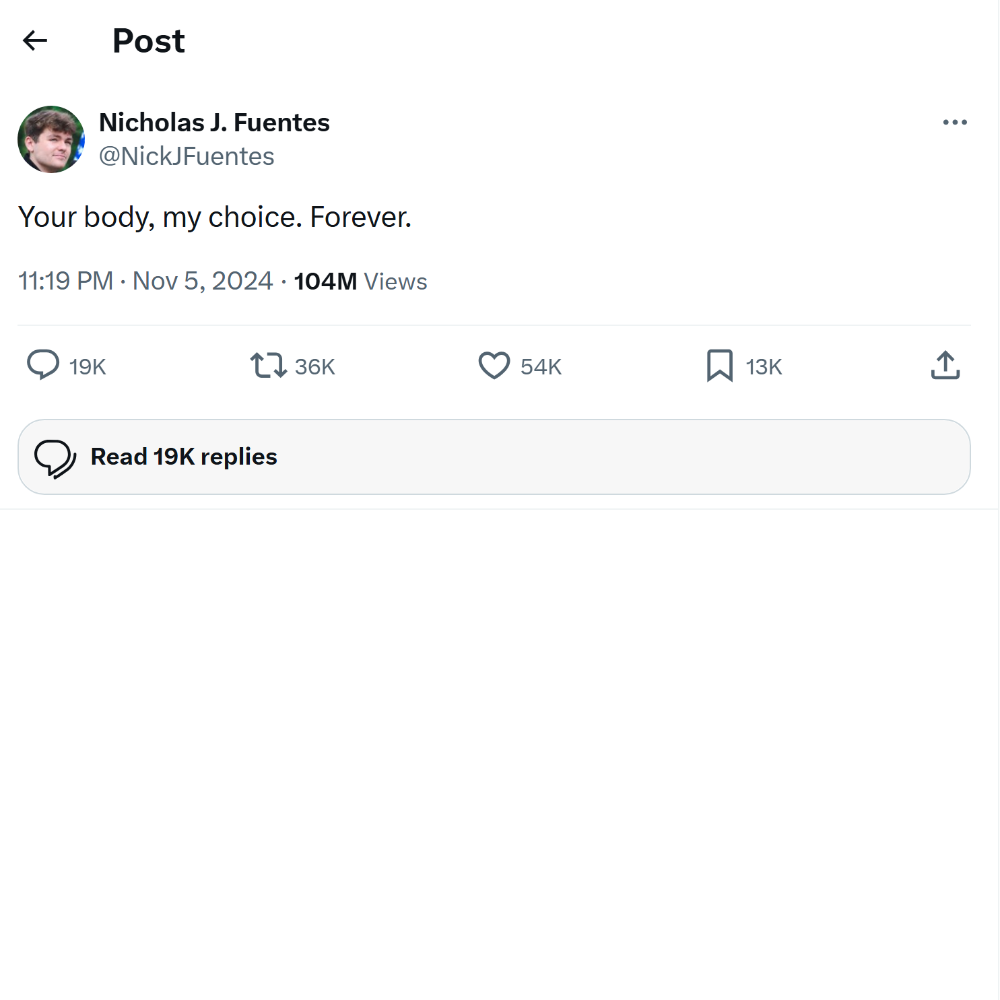
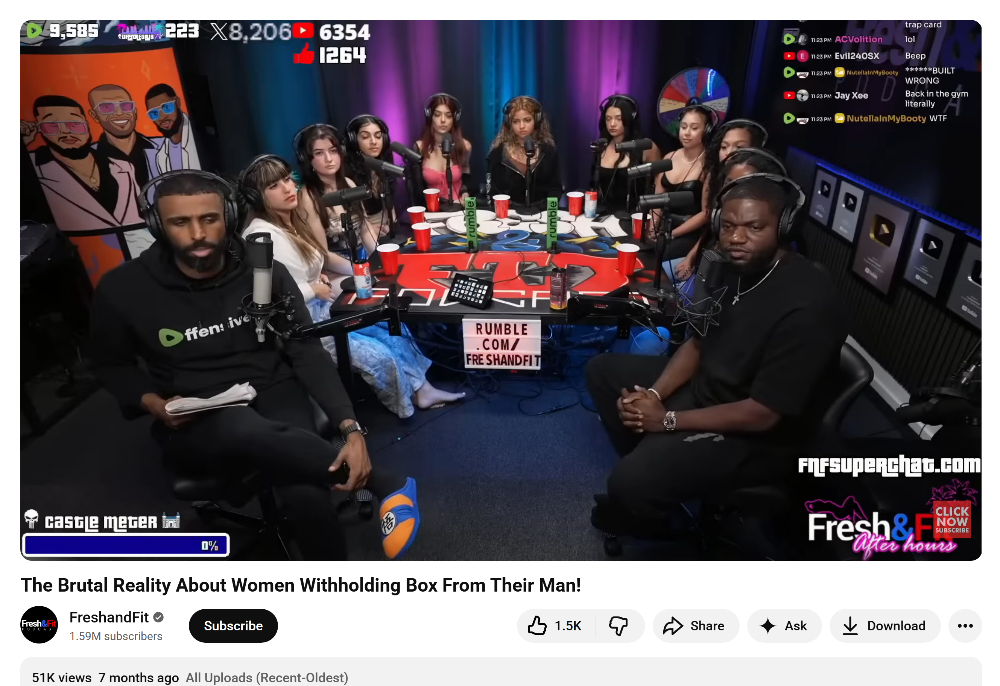
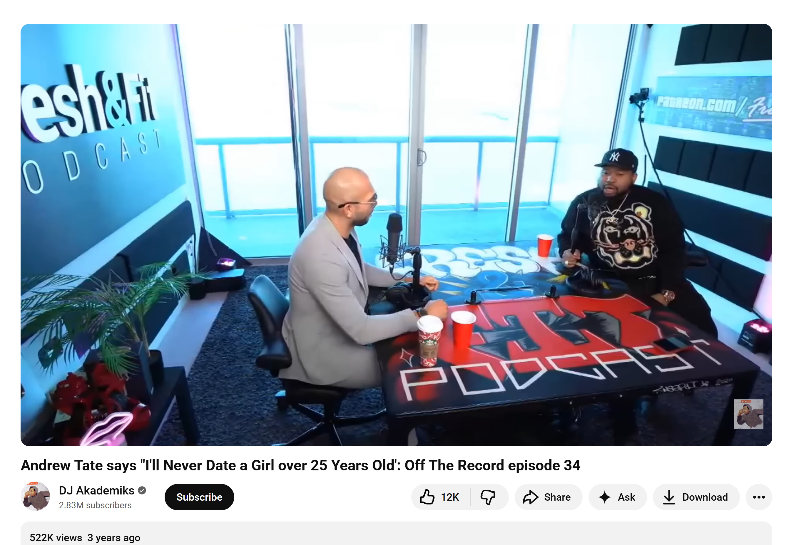
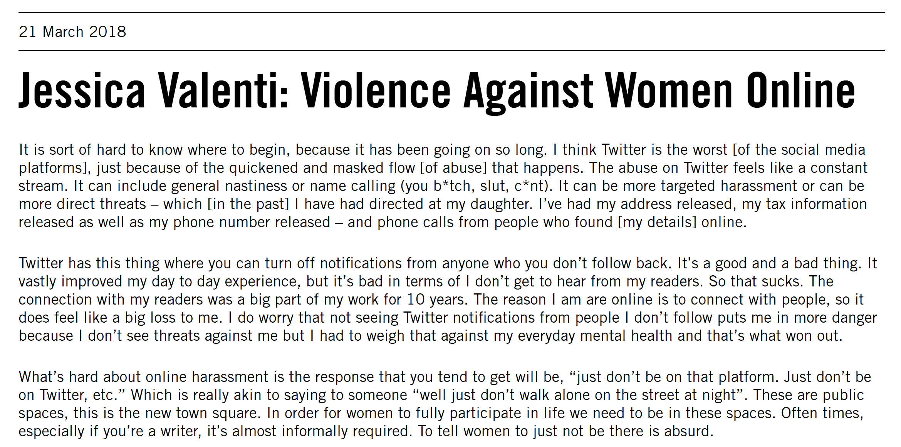
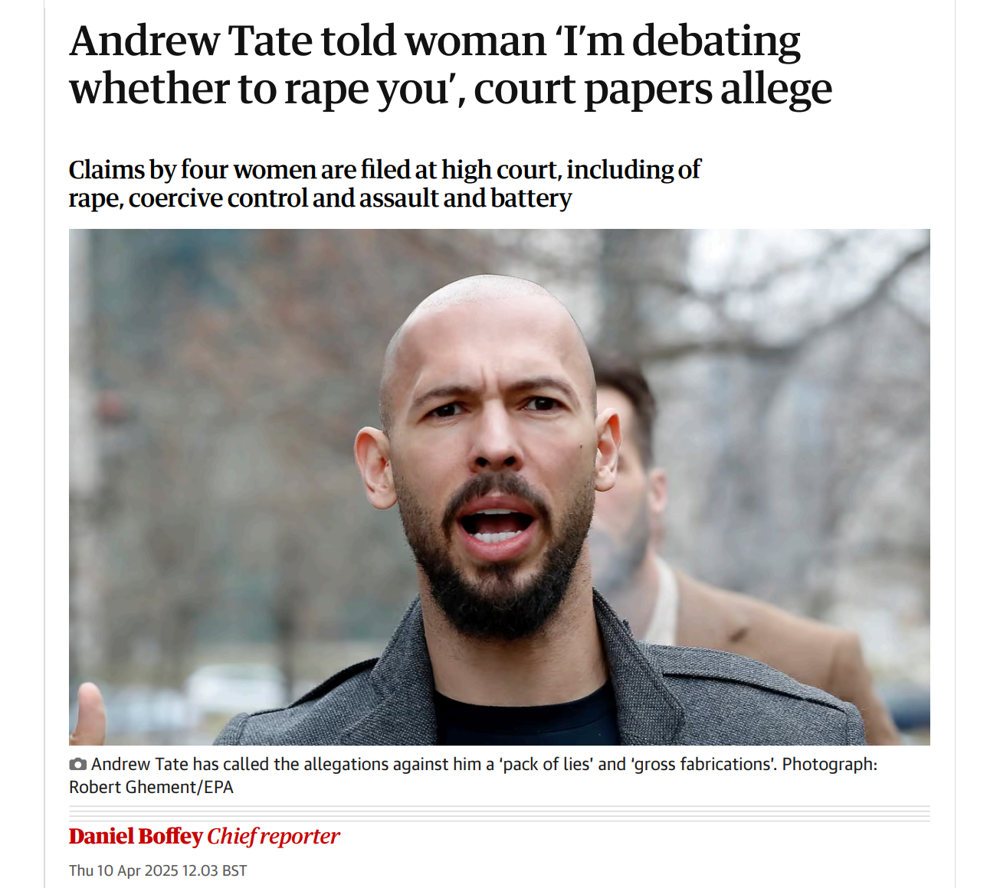

You started out enjoying the perks of a wealthy, high-status lifestyle, following male influencers but then noticed how they treated women as symbols of success and power. Slowly, you began to see women less as people and more as markers of status, comparing yourself and your social value against them. Before long, this mindset pulled you into the Red Pill community, a space where men are taught to see relationships as a game of dominance and control, and where women are often reduced to objects or rewards. Now you are trapped. The Red Pill community reinforces your beliefs, isolating you in a worldview where status, manipulation, and perceived power over women define your sense of self, leaving you caught in a cycle of resentment, obsession, and a skewed understanding of connection.






The Red Pill community has had serious real-world consequences. Online and in-person harassment campaigns have targeted women who speak out, like journalist Jessica Valenti, sending threats and abuse that create a climate of fear. Figures such as Andrew Tate have been linked to exploitative networks, including allegations of sex trafficking and coercive behavior, highlighting how some members translate their online ideologies into criminal actions. These patterns reinforce a culture where women’s autonomy is undermined and sexual violence is normalized, teaching participants that coercion and domination are acceptable. What begins as discussions about dating and social strategy can escalate into a worldview that condones abuse and systematically marginalizes women.

